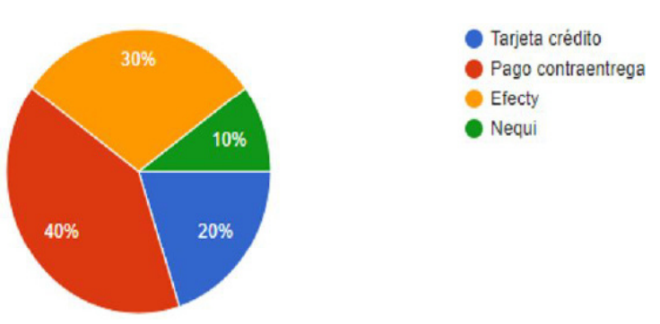
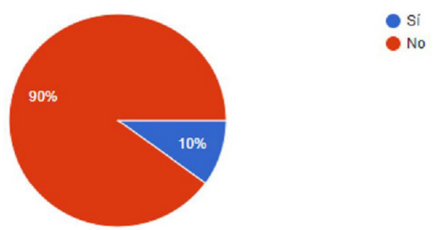
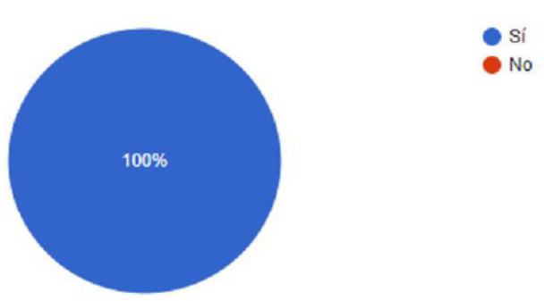
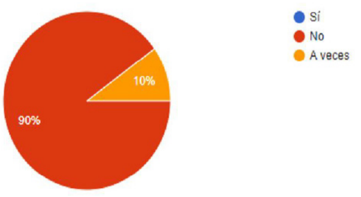

Comercio electrónico en el sector
artesanal en Norte de Santander
E-commerce in the handicraft sector in
Norte de Santander
Lina Andrea Cortés-Miranda
Estudiante, Fundación de Estudios Superiores
Comfanorte, Cúcuta, Colombia
Angie Paola Galeano-Solano
Estudiante, Fundación de Estudios Superiores
Comfanorte, Cúcuta, Colombia
Saray Daniela Nader-Sánchez
Estudiante, Fundación de Estudios Superiores
Comfanorte, Cúcuta, Colombia
Karen Dayana Saboyá-García
Estudiante, Fundación de Estudios Superiores
Comfanorte, Cúcuta, Colombia
Ender José Barrientos-Monsalve
Fundación de Estudios Superiores Comfanorte, Cúcuta, Colombia.
*Autor de correspondencia: ej_barrientos@fesc.edu.co
© Los autores. Editado por la Universidad Francisco de Paula Santander.
This is an article under the license CC
BY-NC 4.0.

Recibido: Febrero 12 de 20120
Aceptado: Mayo 15 de 2020
Como citar: Camacho-Castillo, A.M., Torres-Mendoza, D.M., Barrientos-Monsalve,
E.J. (2020). Gestión
de intangibles en la industria informal de la moda en el subsector confecciones de Cúcuta.
Reflexiones
contables (Cúcuta), 3 (1), 51-56.
Palabras Clave:
beneficio, comercio electrónico,
evolución, página web, productos, servicios.
Resumen
El artículo está enfocado en conocer si el
comercio electrónico está siendo aprovechado
como herramienta que impulse la compra
y venta de artículos artesanales en Norte
de Santander. Precisamente, el avance de
estos ha planteado nuevos horizontes en
diferentes aspectos del comercio electrónico,
como lo es la venta y compra de productos
de una forma más rápida y fácil tanto para
el consumidor como para el vendedor. El
comercio electrónico ha experimentado una
notable evolución, pasando de ser un simple
catálogo de productos o servicios, construido
a partir de una página estática, a convertirse
en un medio eficaz para realizar negocios.
El comercio electrónico es una herramienta
que si se aprovecha puede traer los mejores
beneficios para las empresas.
Keywords:
profit, e-commerce, evolution,
website, products, services.
Abstract
The article focuses on whether e-commerce is
being used as a tool to promote the purchase
and sale of handicrafts in Norte de Santander.
Precisely, the advance of these has raised new
horizons in different aspects of e-commerce,
such as the sale and purchase of products in
a faster and easier way for both the consumer
and the seller. E-commerce has undergone
a remarkable evolution from being a simple
catalogue of products or services, built from
a static page, to becoming an effective means
of doing business. E-commerce is a tool that,
if harnessed, can bring the greatest benefits to
companies.
Introducción
El comercio electrónico, o e-commerce, es la
compra-venta de productos o servicios a través
de Internet y redes informáticas. Además,
conlleva tareas como el marketing, contenidos
e información en la red. Todo ello supone una
revolución en la manera en la que las empresas
se comunican y desarrollan su actividad
comercial. La importancia de este método es la
accesibilidad que los clientes de una empresa
pueden tener a los productos o servicios que
ofrece la empresa, desde cualquier lugar y en
cualquier momento (Cegos, 2020).
Según cifras del Observatorio de Ecommerce
(2020) Europa ($482.3bn) y Norteamérica
($452.4bn) se encuentran entre las primeras
regiones donde más facturación se genera.
Sin embargo, en la actualidad, quien tiene un
mayor crecimiento es Asia-Pacifico (un 44.5%)
con una facturación en el 2013 de 567.3bn de
dólares. De igual forma Latinoamérica muestra
una gran evolución, con un crecimiento del
21.5% y una facturación de $33.2bn. Los
países de esta región que hoy más compran
por Internet son: Brasil, Venezuela, Argentina,
Colombia, México, Perú y Chile. ComScore
afirma que ocho de cada diez consumidores
latinoamericanos buscan, investigan y compran
productos en línea semanalmente.
Actualmente el comercio electrónico ha
experimentado un fuerte crecimiento a nivel
global, tanto en volumen de usuarios como de
sitios comerciales; sin duda alguna la inversión
en publicidad ha contribuido a su acelerado
desarrollo de una manera exponencial. Hoy
es la manera fácil y rápida de hacer negocios
sin necesidad de grandes inversiones, desde
la comodidad de su hogar u oficina, pues
solo se requiere un computador y acceso
a Internet. (Troconis, 2019). Es innegable la
importancia que el Internet ha adquirido en
la cotidianidad de las personas, gracias a la
inmediatez y comodidad que brinda. Hacer
mercado, comprar regalos, transferir dinero y hasta pagar los servicios básicos del hogar
se ha vuelto mucho más sencillo pues esta
herramienta brinda la posibilidad de hacerlo
todo desde un dispositivo sin gastar tiempo
en filas ni desplazamientos. (Portafolio, 2013)
Colombia representa hoy en día, una gran
oportunidad para el comercio electrónico. La
política del gobierno colombiano que incluye
masificación y apropiación de tecnologías
digitales, el crecimiento económico y los
cambios en los hábitos de compra del
consumidor colombiano donde Internet
juega un rol cada vez más importante (Paiño,
2014). El país cuenta con el 63% de compras
en línea, esto da a exponer que es una alta
cifra de compradores. Dentro del país existen
diferentes páginas web en donde se pueden
adquirir diferentes tipos de artículos, como
Ebay, Mercado libre, Amazon, OLX, Poppe,
entre otras. (Observatorio de Ecommerce,
2019), permitiendo su entrada a una etapa de
ascenso donde el comercio electró¬nico no
va a parar de crecer. Aunque se trata de un
fenómeno panregional, Colombia tiene una
serie de particularidades que lo hacen, hoy
por hoy, uno de los mercados más atractivos
para desarrollar negocios electrónicos y sobre
el cual han puesto su mira grandes jugadores
locales e internaciona¬les (Soler, 2016)
Según el estudio Global de Nielsen sobre
Comercio Conectado, el 40 por ciento de los
colombianos ha comprado alguna vez ropa o
productos de moda en páginas web, mientras
que el 39 por ciento ha adquirido dispositivos
electrónicos por este medio, comprobando
su aceptación y participación en el mercado
digital (Gutiérrez Tobar, 2015)
Según el más reciente estudio de la Cámara
Colombiana de Comercio Electrónico (2019),
en nuestro país el 76 % de los internautas han
hecho compras por internet al menos una
vez en su vida, y desde el 2016, las compras
por internet anualmente oscilan alrededor de
los 26000 dólares, cifra considerablemente
positiva, pues representa un crecimiento de más del 60 % en los últimos dos años. Este
fenómeno ha sido posible gracias a que cada
vez son más los comerciantes que se atreven
a migrar a las plataformas digitales y lazar sus
productos en este mercado, ya sea de manera
exclusiva o como un complemento a las tiendas
físicas en formato tradicional.
Con el pasar de los años y la evolución de la
tecnología, Colombia ha sido uno de los países
que se ha ido adaptando a estos cambios
para poder aplicarlos en el día a día, si bien,
el comercio electrónico ha sido una de las
mayores ventajas en el mundo, las personas
lo han adoptado como una nueva forma de
trabajo, sin embargo, no todo el País ha sabido
aprovecharlo (Roa Zapata & Cuellar Bautista,
2019). Para los artistas como diseñadores,
artesanos, modistas, entre otros, vender
sus artículos no siempre es fácil. Si bien, en
Colombia se pueden encontrar páginas como
Etsy, Ebay, Mercado libre, entre otros, sin
embargo, no cumplen con las características
necesarias para considerarlas como una tienda
electrónica diseñada para los artesanos y
trabajadores independientes que quieran
vender sus artículos, sumándole el hecho de
que la moneda no siempre es la más asequible
tanto para el cliente como para el vendedor, al
igual que el tiempo de los envíos (Artesanías
de Colombia, 2017).
El objetivo principal de este artículo es conocer
el uso del comercio electrónico como un
impulso para la compra y venta de artículos
artesanales en Norte de Santander, ya que
en el departamento no se ha aprovechado
totalmente los beneficios que este trae tanto
para los trabajadores independientes como
para las empresas que realizan trabajos
artesanales. La presente investigación también
se enfocará en identificar cuáles son las
necesidades de los artistas independientes
en el departamento de Norte de Santander,
ya que, existen muchas personas que
elaboran productos a mano como accesorios,
artesanías, ropa, manualidades, arte digital, entre otros, y a veces no encuentran el medio
adecuado para poder comercializarlos, por
lo tanto, el siguiente trabajo busca indagar y
conocer aquellas estrategias que se pueden
implementar para cumplir con las necesidades
de estos emprendedores, para que puedan
comercializar su trabajo de una forma segura,
rápida y eficaz usando los beneficios que las
tecnologías nos está brindando hoy en día.
Materiales y Métodos
La investigación es diseño descriptivo,
con enfoque cuantitativo, se aplicó como
instrumento una encuesta dirigida a 20
personas con conocimientos básicos en la
compra electrónica de productos.
Resultados y análisis
El 40% de la población encuestada votó por
el pago contra entrega, mientras que un 30%
prefiere hacer los pagos por Efecty, por otro
lado el 20% paga con tarjeta de crédito y un
10% de la población por la aplicación Nequi
(gráfica 1)

Gráfica 1. ¿Qué formas de pago utiliza al comprar en una página web?
Como se puede observar en la gráfica 2, la
mayoría de la población encuestada con un
90% no tiene conocimiento de alguna página
web en Norte de Santander.

Gráfica 2 ¿Conoce alguna página de venta de artículos vintage en Norte de
Santander?
Todas las personas encuestadas si creen que
hace falta páginas web que vendan artículos
artesanales en Norte de Santander (gráfica 3)

Gráfica 3. ¿Cree usted que hacen falta páginas web que vendan este tipo de
artículos en Norte de Santander?
El 90% respondió que no ha comprado artículos
en páginas web en Norte de Santander, esto
por la carencia de las mismas, mientras que un
10% sí ha comprado (gráfica 5).

Gráfica 5. ¿Ha comprado usted artículos vintage por medio de páginas web
en Norte de Santander?
Conclusiones
El mercado electrónico es bastante amplio
en Colombia, sin embargo, no existe una
plataforma digital para la venta y compra de
artículos artesanales en el departamento de
Norte de Santander, a esto se le suma la falta
de medios para vender el trabajo de los artistas
independientes del departamento, el pago en
otras monedas en páginas exteriores del país y
la demora en los envíos de los productos.
Es importante que la población del país y, sobre
todo, Norte de Santander se pueda adaptar
correctamente a los cambios tecnológicos
para aprovechar las ventajas que estos traen
consigo, abarcándolo desde todos los ámbitos.
En el Departamento de Norte de Santander
ya que el medio siempre es competitivo y no
existen páginas donde los artesanos puedan
tener un espacio exclusivo para vender sus
productos, un espacio donde las personas
puedan llegar directamente al objetivo de lo
que están buscando.
Referencias
- Artesanías de Colombia. (2017). Diagnóstico del
sector artesanal en Colombia. Disponible en:
https://repositorio.artesaniasdecolombia.com.co/bitstream/001/4102/1/INST-D%202017.%2041.pdf
- Buenaño, D. A., Bustillos, H. M., & Moreno, G. G.
(2014). Comunicación 360: herramientas para
la gestión de comunicación interna e identidad.
Facultad de Comunicación-Universidad
Tecnológica Equinoccial.
- Cámara Colombiana de Comercio Electrónico.
(2019). El eCommerce continúa creciendo en
Colombia y aumentan las visitas a través de
dispositivos móviles. Disponible en: https://www.ccce.org.co/noticias/el-ecommercecontinua-creciendo-en-colombia-y-aumentan-las-visitas-a-traves-de-dispositivos-moviles/
- Cegos. (2020). ¿Qué es el comercio
electrónico?. Disponible en: https://www.cegosonlineuniversity.com/que-es-elcomercio-electronico/
- Gutiérrez Tobar, E. (2015). Impacto del comercio
electrónico en las grandes y medianas
empresas de la ciudad de Sogamoso Boyacá,
Colombia, Cuadernos Latinoamericanos de
Administración, XI(20), 83-96
- Observatorio de Eco-mmerce (2020). Cómo
crece el Comercio Electrónico en el mundo.
Disponible en: http://observatorioecommerce.com/como-crece-el-comercio-electronico-enel-mundo/
- Observatorio de Ecommerce. (2019). Medición
de Indicadores de consumo del Observatorio
eCommerce. Disponible en: https://www.observatorioecommerce.com.co/wpcontent/uploads/2019/03/estudio-consumoecommerce-colombia-observatorio-2019.pdf
- Portafolio (2013). Compras online: ¿cuáles son
sus ventajas?. Disponible en: https://www.portafolio.co/tendencias/10-ventajas-comprasinternet-75878
- Roa Zapata, E. F., & Cuellar Bautista, D. (2019).
Evolución del comercio electrónico en
Colombia en la última década. Retrieved from
https://ciencia.lasalle.edu.co/administracion_de_empresas/3080
- Soler Patiño, A. (2016). ¿Hacia dónde va el
comercio electrónico en Colombia?. Ploutos,
4(1), 17-24. Recuperado a partir de https://journal.universidadean.edu.co/index.php/plou/article/view/1371